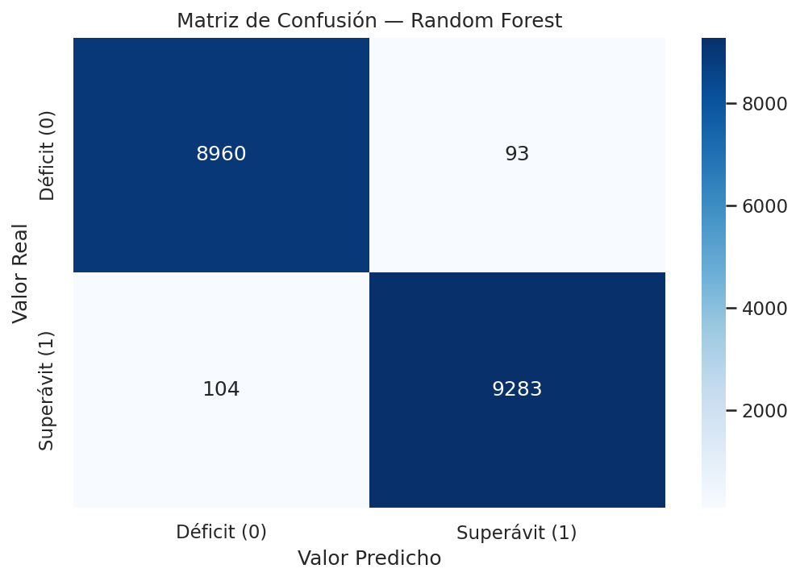
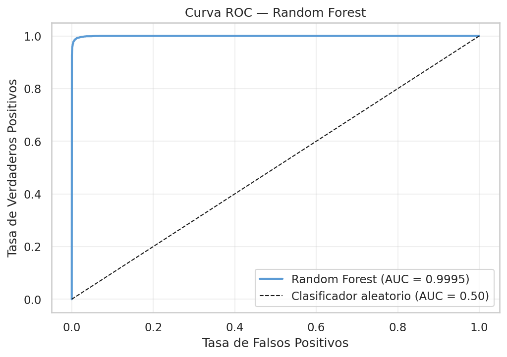
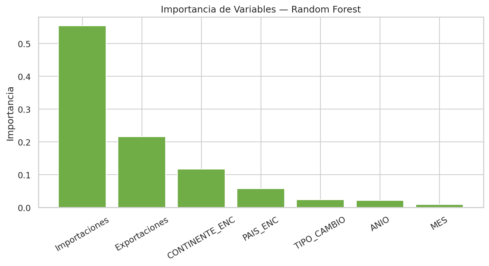
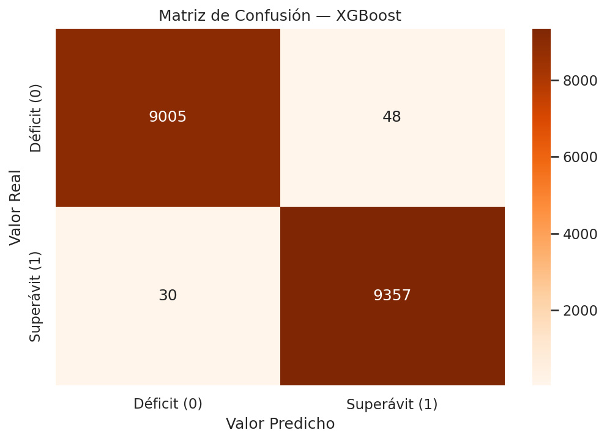
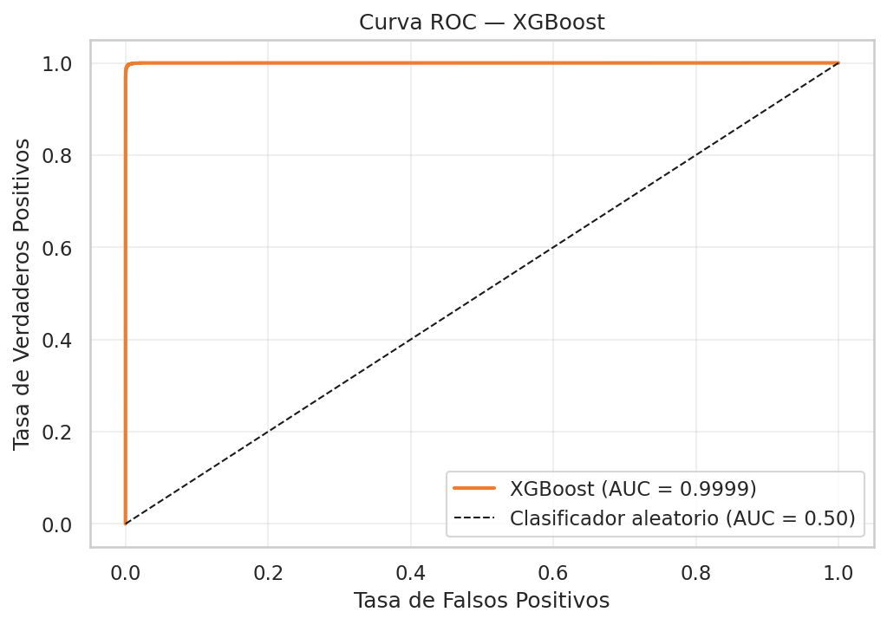
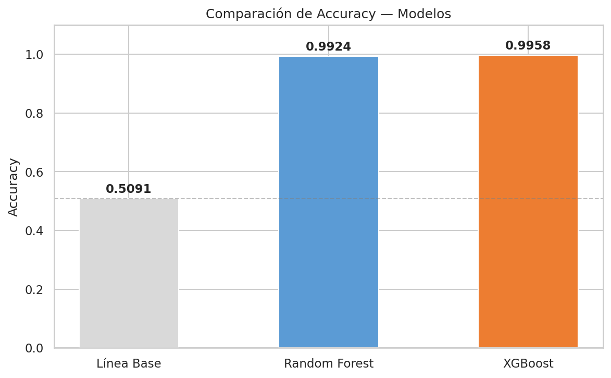
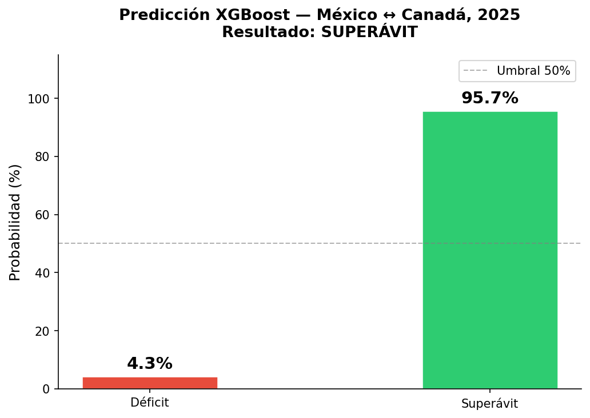

Modelo Supervisado
Planteamiento de la tarea
La tarea se formula como clasificación binaria: predecir si el balance comercial mensual de México con un país dado será superávit (SUPERAVIT = 1) o déficit (SUPERAVIT = 0).
El dataset resultante contiene 92,196 registros país-mes con clases prácticamente balanceadas: 50.9% superávit y 49.1% déficit, eliminando la necesidad de técnicas de balanceo como SMOTE.
Variables de entrada
Se seleccionaron 7 features:
| Feature | Descripción |
|---|---|
Exportaciones |
Valor mensual de exportaciones en USD |
Importaciones |
Valor mensual de importaciones en USD |
TIPO_CAMBIO |
Tipo de cambio MXN/USD del mes (Banxico SF43718) |
CONTINENTE_ENC |
Región geográfica codificada con LabelEncoder |
PAIS_ENC |
Identificador del país codificado con LabelEncoder |
ANIO |
Componente de tendencia temporal |
MES |
Componente de estacionalidad |
Se excluyeron ID_CONTINENTE (faltantes), PERIODO (reemplazado por ANIO y MES) y BALANCE (causa data leakage porque deriva directamente de SUPERAVIT).
División de datos
División estratificada 80/20 con random_state=42:
- Entrenamiento: 73,756 registros — 50.9% superávit
- Prueba: 18,440 registros — 50.9% superávit
from sklearn.model_selection import train_test_split
X_train, X_test, y_train, y_test = train_test_split(
X, y,
test_size=0.2,
random_state=42,
stratify=y
)Modelo 1: Random Forest
Búsqueda de hiperparámetros
GridSearchCV con 5 folds, 24 candidatos, 120 fits en total. Métrica de optimización: f1_weighted.
from sklearn.ensemble import RandomForestClassifier
from sklearn.model_selection import GridSearchCV
param_grid = {
"n_estimators": [100, 200],
"max_depth": [None, 10, 20],
"min_samples_split": [2, 5],
"min_samples_leaf": [1, 2],
}
gs = GridSearchCV(
RandomForestClassifier(random_state=42),
param_grid,
cv=5,
scoring="f1_weighted",
n_jobs=-1
)
gs.fit(X_train_scaled, y_train)Hiperparámetros óptimos:
| Hiperparámetro | Valor óptimo |
|---|---|
n_estimators |
200 |
max_depth |
None |
min_samples_split |
2 |
min_samples_leaf |
1 |
Resultados
98.93%
Accuracy
0.9995
AUC-ROC
+48.03 pp
Mejora vs baseline
| Métrica | Valor |
|---|---|
| Accuracy | 0.9893 |
| Precision (weighted) | 0.9893 |
| Recall (weighted) | 0.9893 |
| F1-score (weighted) | 0.9893 |
| F1-score (macro) | 0.9893 |
| AUC-ROC | 0.9995 |
| Línea base | 0.5091 |
| Mejora | +48.03 pp |


Importancia de features

Exportaciones e Importaciones dominan la importancia de features, lo que es coherente con la definición de la variable objetivo: el balance es casi determinista dado el valor de ambos flujos.
Modelo 2: XGBoost
Búsqueda de hiperparámetros
GridSearchCV con 5 folds, 24 candidatos, 120 fits en total. Métrica de optimización: f1_weighted.
from xgboost import XGBClassifier
param_grid = {
"n_estimators": [100, 200],
"max_depth": [4, 6],
"learning_rate": [0.05, 0.1],
"subsample": [0.8, 1.0],
}
gs = GridSearchCV(
XGBClassifier(
use_label_encoder=False,
eval_metric="logloss",
random_state=42
),
param_grid,
cv=5,
scoring="f1_weighted",
n_jobs=-1
)
gs.fit(X_train_scaled, y_train)Hiperparámetros óptimos:
| Hiperparámetro | Valor óptimo |
|---|---|
n_estimators |
200 |
max_depth |
6 |
learning_rate |
0.1 |
subsample |
0.8 |
Resultados
99.58%
Accuracy
0.9999
AUC-ROC
+48.67 pp
Mejora vs baseline
| Métrica | Valor |
|---|---|
| Accuracy | 0.9958 |
| Precision (weighted) | 0.9958 |
| Recall (weighted) | 0.9958 |
| F1-score (weighted) | 0.9958 |
| F1-score (macro) | 0.9958 |
| AUC-ROC | 0.9999 |
| Línea base | 0.5091 |
| Mejora | +48.67 pp |


Comparación de modelos

XGBoost supera a Random Forest en 0.65 puntos porcentuales (99.58% vs 98.93%). La ventaja se explica por el mecanismo de boosting: mientras Random Forest construye árboles en paralelo e independientemente, XGBoost los construye secuencialmente, corrigiendo los errores de la iteración anterior mediante gradiente descendente. Esto le permite capturar relaciones más sutiles, como la interacción entre TIPO_CAMBIO y los flujos comerciales en periodos de alta volatilidad cambiaria.
Demostración de reutilización — México ↔︎ Canadá 2025
XGBoost fue serializado con joblib para demostrar su reutilización independiente del entrenamiento. El script src/demo_prediccion_canada.py carga el modelo desde disco y predice para un escenario nuevo sin acceso al dataset original.
import joblib
import pandas as pd
# Cargar modelo y transformadores sin re-entrenar
modelo = joblib.load("models/xgboost.joblib")
scaler = joblib.load("models/scaler.joblib")
le_cont = joblib.load("models/le_continente.joblib")
le_pais = joblib.load("models/le_pais.joblib")
# Escenario: México — Canadá, enero 2025
nuevos_datos = pd.DataFrame({
"Exportaciones": [600_000_000],
"Importaciones": [400_000_000],
"TIPO_CAMBIO": [18.0],
"CONTINENTE_ENC": [le_cont.transform(["América del Norte"])[0]],
"PAIS_ENC": [le_pais.transform(["Canadá"])[0]],
"ANIO": [2025],
"MES": [1],
})
datos_scaled = scaler.transform(nuevos_datos)
X_final = pd.DataFrame(datos_scaled, columns=nuevos_datos.columns)
prediccion = modelo.predict(X_final)[0]
probabilidad = modelo.predict_proba(X_final)[0]
# Resultado: SUPERÁVIT 🟢
Resultado: el modelo predice SUPERÁVIT para México–Canadá en enero 2025, coherente con el perfil histórico: México exporta más bienes manufacturados a Canadá de los que importa de ese país.